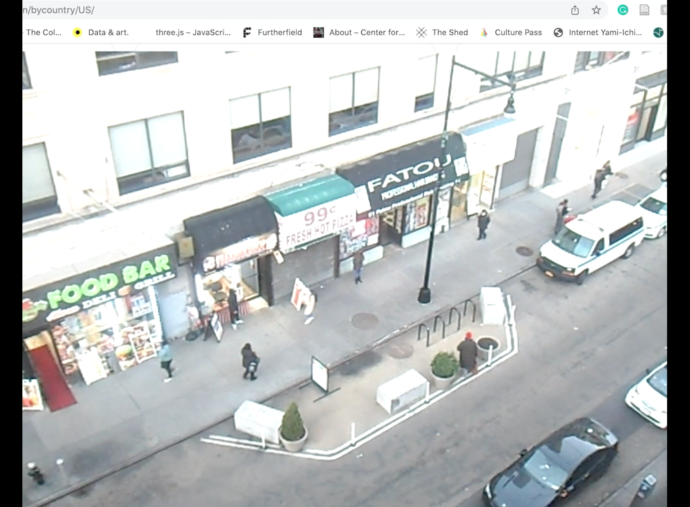

If this was a digital garden what would grow?
A visually playful and nonlinear story of a young adult reflecting on her
experience in the digital. This installation ITWDGWWG? centers her
feelings about surveillance capitalism, digital honesty, social media, and
the idea of being watched. We are accompanied by an audio landscape that
invokes her everyday hustle and bustle and a complicated visual texture to
mimic the brazen nature of the digital landscape. This invites the
exploration of concepts such as data trauma, a term coined by Olivia
Mckayla Ross who states “predictive analysis limits our human potential
for growth”. Artist BitgurlBleu gives apple scripts new life as she
automates her poetry, as seen at the opening and closing of her piece,
reinforcing a perpetual and existential cycle while its hypertext nature
pays homage to the early formation of digital gardens.
. . • ☆ . ° .• °:. *₊ ° . ☆ . . • ☆ . ° .• °:. *₊ ° . ☆ . . • ☆ . °
.• °:. *₊ ° . ☆ . . • ☆ . ° .• °:. *₊ ° . ☆
. . • ☆ . ° .• °:. *₊ ° . ☆ . . • ☆ . ° .• °:. *₊ ° . ☆ . . • ☆ . °
.• °:. *₊ ° . ☆ . . • ☆ . ° .• °:. *₊ ° . ☆
. . • ☆ . ° .• °:. *₊ ° . ☆ . . • ☆ . ° .• °:. *₊ ° . ☆ . . • ☆ . °
.• °:. *₊ ° . ☆ . . • ☆ . ° .• °:. *₊ ° . ☆
. . • ☆ . ° .• °:. *₊ ° . ☆ . . • ☆ . ° .• °:. *₊ ° . ☆ . . • ☆ . °
.• °:. *₊ ° . ☆ . . • ☆ . ° .• °:. *₊ ° . ☆

. . • ☆ . ° .• °:. *₊ ° . ☆ . . • ☆ . ° .• °:. *₊ ° . ☆ . . • ☆ . °
.• °:. *₊ ° . ☆ . . • ☆ . ° .• °:. *₊ ° . ☆
In the end, BitgurlBleu wants her audience to answer her one question “If
this was a digital garden what would grow?”
CLICK HERE: sum inspo:3
. . • ☆ . ° .• °:. *₊ ° . ☆ . . • ☆ . ° .• °:. *₊ ° . ☆ . . • ☆ . °
.• °:. *₊ ° . ☆ . . • ☆ . ° .• °:. *₊ ° . ☆
SNIPPET HERE:
CLICK ME: what is Bitgurls digital garden like? answers HERE!